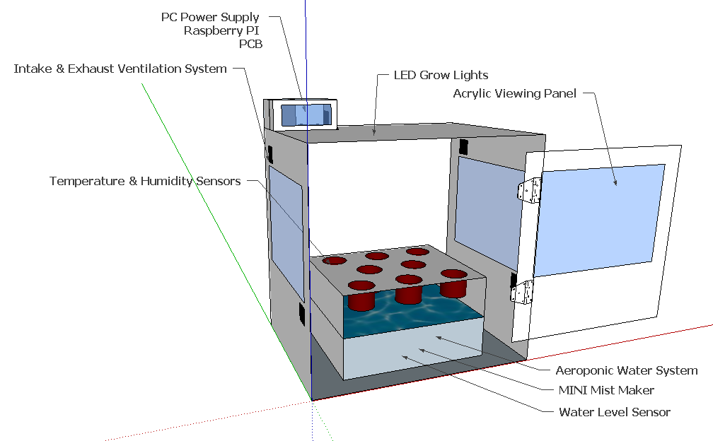

Our design goals
The Botny automated garden allows any user to grow a variety of plants in confined and unconventional environments. By using a simple soilless Fogponic system at its’ heart it takes up very little space and uses very few resources. The system consists of a control unit, a collection of sensors to monitor the environment inside itself, and a series of parameters to correct the environment for optimum growth. Botny is designed to automate the gardening process by monitoring a plants vitals for:
- Heat
- Humidity
- PH
And optimize the environment conditions:
- Light
- Water
- Nutrients
- Cooling
Features
- Fogponic system using an ultrasonic mist maker to provide water and nutrients to the roots of the plants.
- Growth optimized LEDs to provide light for a specified time of day.
- Temperature and humidity sensors to monitor the environment of the system.
- PH sensor to monitor the amount of nutrients in the reservoir.
- PWM computer fans and peltier coolers for ventilation and temperature management.
- Raspberry Pi 3 for environment control, scheduling, and internet connectivity.
- Website interface to monitor the plants vitals and update environment parameters.